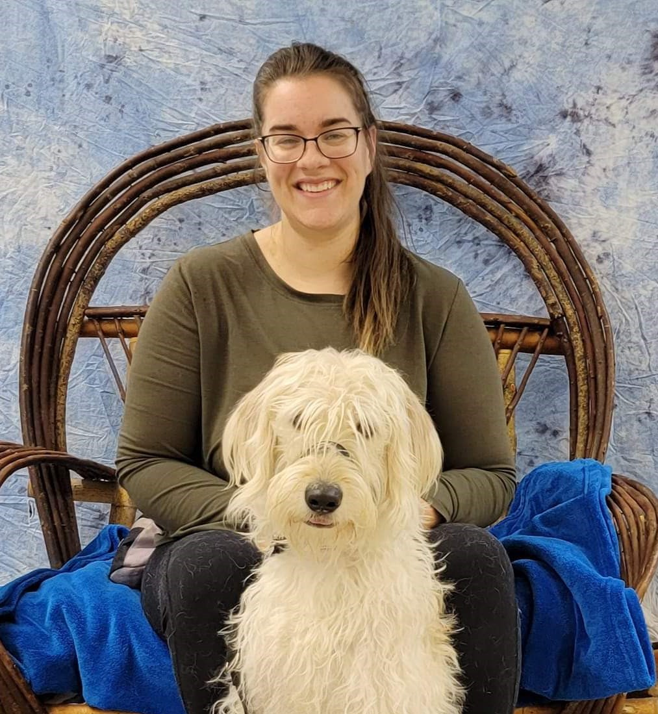

Diane Lish | WDD 130
Hello! I am Diane Lish and I am a mother of 4 kids. My house is full of life including: a cat, a dog, a frog, a parrot, and chickens. I live in Idaho, and living near the mountains means we love camping, kayaking, hiking and spending time outdoors! I have recently gone back to school and am working toward getting a degree in software development. I have learned that I really love working with different kinds of programming and am excited to continue on my way toward my degree. Some things I like to do in my spare time are read, decorate cakes, going on walks, and playing board games.